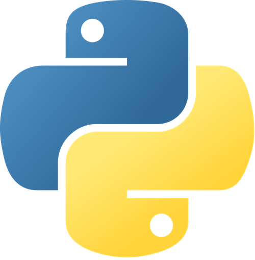

El mejor vendedor era el problema
Hallazgo: el mesero con las propinas más altas era quien ahuyentaba a los clientes repetidos, que eran los de mayor consumo. La caída de ingresos venía de ahí.
Python · pandas · seaborn
Analytics Engineer & Data Analyst — construyo la infraestructura que va del dato crudo al KPI: pipelines, testing y modelado.
Python (Polars, Pandas) · SQL · DuckDB · Parquet · pytest · Power BI · Snowflake · AWS
Trabajo en la frontera entre el análisis y la ingeniería de datos. En mi rol actual diseñé el framework ETL en Python sobre el que corre el parque analítico de mi área: más de 20 pipelines en producción, pruebas automatizadas en 24 de 25 proyectos y carga incremental con partition pruning.
Vengo de una ruta poco común. Empecé en diseño industrial y manufactura calculando costos y eficiencias de producción, y ahí entendí algo que sigue ordenando cómo trabajo: un análisis solo vale si cambia una decisión. Por eso me interesa menos el tablero bonito y más el pipeline que lo sostiene, la prueba que lo valida y la definición de métrica en la que todos están de acuerdo.
Tres casos donde el dato cambió la decisión. El detalle completo, con código y gráficas, está en cada uno.
Hallazgo: el mesero con las propinas más altas era quien ahuyentaba a los clientes repetidos, que eran los de mayor consumo. La caída de ingresos venía de ahí.
Python · pandas · seaborn

Hallazgo: descartadas calidad y estética, la caída se explicaba por una corrección de mercado: el precio del bolígrafo estaba muy por encima de su valor real.
Python · pandas · matplotlib

Hallazgo: sobre 169.793 beneficiarios, detecté una proporción anómala de registros sin dato en campos críticos como escolaridad, que compromete cualquier conclusión sobre el programa.
Python · pandas · Power BI · encuesta propia

Cuatro casos de análisis exploratorio y diagnóstico, más dos proyectos de machine learning. Limpieza, transformación, modelado y visualización.

Cinco dashboards de facturación, logística, recursos humanos, distribución de ventas y seguridad vial. Modelado, DAX y diseño de indicadores.